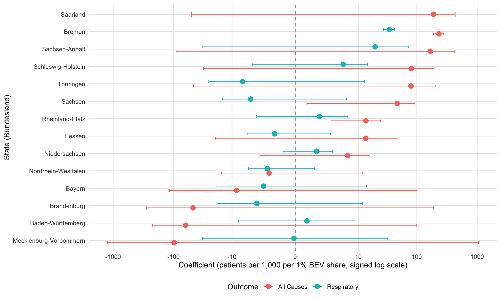
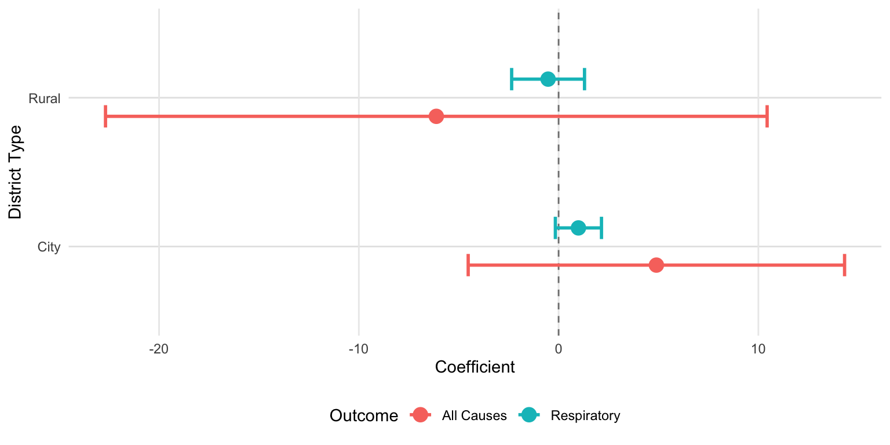
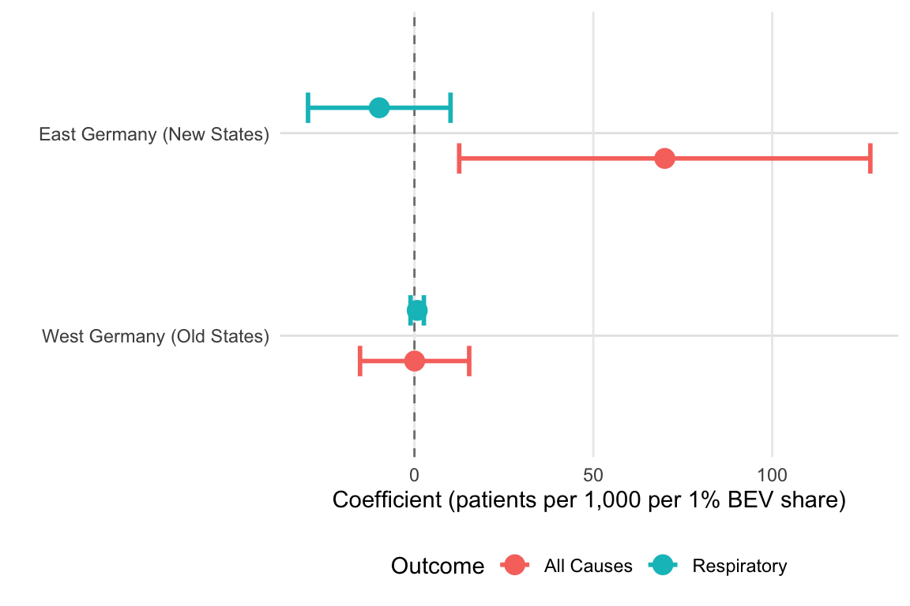

# Load necessary libraries
library(knitr)
opts_knit$set(root.dir = "../../") # Set working directory to project root
library(tidyverse) # Data manipulation and visualization
library(gganimate) # Create animated plots
library(arrow) # Read/write Parquet files
library(sf) # Spatial data handling
library(haven) # Read Stata files
library(lfe) # Linear fixed effects models with instrumental variables
library(texreg) # Professional regression table formattingEVs and Health: Experiments for Germany
TODO
This section outlines the methodological improvements and robustness checks needed for the analysis.
1. Temporal Lag Structure
Implement proper temporal relationships between variables to capture causal effects:
-
- Health outcome → t (current period)
- BEV adoption → t-1 (one-year lag to capture delayed health effects)
- Charging infrastructure (PV) → t-2 (two-year lag: infrastructure affects BEV adoption with delay)
- Solar radiation (GR) → t-3 (three-year lag: radiation affects infrastructure deployment)
2. Instrumental Variable Strategy
Validate the multi-stage instrumental variable approach:
- This ensures a clean identification chain: GR → PV → BEV → Health
3. Nonlinear Relationships
Account for potential nonlinearities in the relationships:
4. Fixed Effects Specification
Control for unobserved heterogeneity:
-
- State-specific policy changes (e.g., EV subsidies, emissions regulations)
- Regional economic shocks
- Healthcare system differences across states
5. Heterogeneity Analysis
Examine effect heterogeneity across different contexts:
-
- District type: Rural districts (Landkreise) vs. Urban districts (Kreisfreie Städte)
- Geography: Western states (Old Bundesländer) vs. Eastern states (New Bundesländer)
This reveals whether EV health effects differ by urbanization and regional characteristics.
6. Control Variables
Include additional covariates to reduce omitted variable bias:
-
- Physician density (healthcare access)
- Population age structure (health needs)
Note: Some factors may be absorbed by district fixed effects.
Introduction
This notebook analyzes the causal effect of battery electric vehicle (BEV) adoption on health outcomes in Germany using administrative data from 2016-2023. We employ an instrumental variables strategy that exploits exogenous variation in solar radiation to identify the health impacts of EV adoption.
Research Question: Do regions with higher BEV adoption rates experience improved health outcomes, as measured by hospitalization rates?
Identification Strategy: We use a multi-stage instrumental variables approach where solar radiation affects charging infrastructure deployment, which in turn affects BEV adoption. This provides plausibly exogenous variation in EV adoption that is uncorrelated with unobserved determinants of health.
Data Loading
Data Preparation
This section loads and prepares three key datasets: BEV adoption, health outcomes, and geographic boundaries.
## BEV Data
# Load battery electric vehicle (BEV) adoption data
# Source: German Federal Motor Transport Authority (Kraftfahrt-Bundesamt)
# Coverage: All German districts (Kreise), 2016-2023
bev_data <- read_dta("data/Germany/raw/BEV_health.dta", col_select = c(AGS, year, gr_by_year, BEV_share, LF_PV, pop_total, average_age, GDP_per_capita))
# Clean and prepare BEV data
bev_data <- bev_data %>%
filter(AGS >= 1000, AGS <= 99999) %>% # Keep only valid district codes (excludes aggregated regions)
mutate(
across(c(AGS, year, pop_total, GDP_per_capita), as.integer),
) %>%
rename(
PV_l1 = LF_PV, # LF_PV = Ladeinfrastruktur (charging points), already lagged by 1 year
gr = gr_by_year # gr = Global radiation (instrument for solar panel installation)
)
# Optional: Save processed data for faster loading in future sessions
# bev_data %>% write_parquet("data/Germany/bev_data.parquet")
## Health Data
# Load hospitalization data from German Federal Statistical Office (Destatis)
# Source: Hospital statistics (Krankenhausstatistik), Table 23131-01-01-4
# Coverage: All hospital admissions by district, year, age group, and ICD-10 diagnosis
health_data_raw <- read_csv2("data/Germany/raw/23131-01-01-4.csv", skip = 7, locale = locale(encoding = "ISO-8859-1"))
# Clean and reshape health data
# Focus on two outcomes: all-cause hospitalizations and respiratory disease hospitalizations
health_data <- health_data_raw %>%
rename(year = ...1, AGS = ...2, age = ...4) %>% # Rename automatically generated column names
select(-...3) %>% # Remove redundant district name column
filter(!str_detect(AGS, "[A-Za-z]")) %>% # Remove rows with text codes (aggregate statistics)
# Extract key variables
filter(age == "Insgesamt") %>% # Focus on all ages combined
select(
year, AGS,
patients_all = insgesamt, # Total hospitalizations (all diagnoses)
patients_resp = `J00-J99 Krankheiten des Atmungssystems` # Respiratory diseases (ICD-10: J00-J99)
) %>%
mutate(
across(c(year, AGS, starts_with("patients")), as.integer),
) %>%
mutate(
# Harmonize district codes for city-states (have different coding conventions)
AGS = case_when(
AGS == 11 ~ 11000, # Berlin
AGS == 2 ~ 2000, # Hamburg
TRUE ~ AGS
)
) %>%
filter(AGS >= 1000, AGS <= 99999) # Keep only valid district codes
# Optional: Save processed health data
# health_data %>% write_parquet("data/Germany/health_data.parquet")
## Geographic Data
# Load district boundary shapefile
# Source: Federal Agency for Cartography and Geodesy (BKG)
# VG5000 = Administrative areas (Verwaltungsgebiete) at 1:5,000,000 scale
map_data <- st_read("data/Germany/raw/vg5000_12-31.gk3.shape.ebenen/vg5000_ebenen_1231/VG5000_KRS.shp") %>%
mutate(AGS = as.integer(AGS)) %>%
select(AGS, GEN, BEZ, geometry) %>% # Keep: district code, name, type, geometry
mutate(
# Extract state from district code (first 1-2 digits)
state = AGS %/% 1000,
# Map state codes to names
state = case_when(
state == 1 ~ "Schleswig-Holstein",
state == 2 ~ "Hamburg",
state == 3 ~ "Niedersachsen",
state == 4 ~ "Bremen",
state == 5 ~ "Nordrhein-Westfalen",
state == 6 ~ "Hessen",
state == 7 ~ "Rheinland-Pfalz",
state == 8 ~ "Baden-Württemberg",
state == 9 ~ "Bayern",
state == 10 ~ "Saarland",
state == 11 ~ "Berlin",
state == 12 ~ "Brandenburg",
state == 13 ~ "Mecklenburg-Vorpommern",
state == 14 ~ "Sachsen",
state == 15 ~ "Sachsen-Anhalt",
state == 16 ~ "Thüringen",
TRUE ~ NA_character_
),
across(c(BEZ, GEN, state), as_factor),
# Create indicator variables for heterogeneity analysis
CITY = (BEZ %in% c("Kreisfreie Stadt", "Stadtkreis")), # Urban district indicator
NEU = AGS >= 12000 # East Germany indicator (new federal states, post-reunification)
)Data Validation
Verify data quality and consistency across datasets.
## BEV Data Validation
# Check coverage: Number of unique districts in BEV data
bev_data %>% select(AGS) %>% n_distinct()[1] 434# Expected: ~400 districts (Germany has 401 districts as of 2023)
# Identify mismatches: Districts in BEV data but not in map
test <- anti_join(bev_data, map_data, by = "AGS")
test %>% select(AGS) %>% distinct()# A tibble: 33 × 1
AGS
<int>
1 3152
2 3156
3 8210
4 8238
5 8255
6 8310
7 8330
8 8333
9 8410
10 8414
# ℹ 23 more rowstest %>% pull(BEV_share) %>% is.na() %>% mean()[1] 1# Result: 33 districts with missing BEV_share (100% NA)
# Interpretation: These are historical districts that were merged/reorganized
## Health Data Validation
# Check coverage: Number of unique districts in health data
health_data %>% select(AGS) %>% n_distinct()[1] 473# Expected: More than current count due to historical districts
# Identify mismatches: Districts in health data but not in map
test <- anti_join(health_data, map_data, by = "AGS")
test %>% select(AGS) %>% distinct()# A tibble: 72 × 1
AGS
<dbl>
1 3152
2 3156
3 5354
4 13001
5 13002
6 13005
7 13006
8 13051
9 13052
10 13053
# ℹ 62 more rowstest %>% pull(patients_all) %>% is.na() %>% mean()[1] 1# Result: 72 districts with missing patient counts (100% NA)
# Interpretation: Historical districts from earlier years before reorganization## Reverse Validation: Check for Missing Current Districts
## BEV Data Completeness
# Verify all current districts have BEV data
anti_join(map_data, bev_data, by = "AGS")Simple feature collection with 0 features and 6 fields
Bounding box: xmin: NA ymin: NA xmax: NA ymax: NA
Projected CRS: DHDN / 3-degree Gauss-Kruger zone 3
[1] AGS GEN BEZ state CITY NEU geometry
<0 rows> (or 0-length row.names)# Result: 0 missing districts ✓
# All current districts are covered in BEV data
## Health Data Completeness
# Verify all current districts have health data
anti_join(map_data, health_data, by = "AGS")Simple feature collection with 0 features and 6 fields
Bounding box: xmin: NA ymin: NA xmax: NA ymax: NA
Projected CRS: DHDN / 3-degree Gauss-Kruger zone 3
[1] AGS GEN BEZ state CITY NEU geometry
<0 rows> (or 0-length row.names)# Result: 0 missing districts ✓
# All current districts are covered in health data## Spatial-Temporal Visualization
# Create animated choropleth map showing BEV adoption trends
# Purpose: Identify spatial patterns and diffusion of EV adoption
animation_bev <- inner_join(bev_data, map_data, by = "AGS") %>%
drop_na() %>%
arrange(year, AGS) %>%
ggplot() +
geom_sf(aes(geometry = geometry, fill = BEV_share, group = AGS)) +
theme_void() +
scale_fill_viridis_c(
option = "plasma",
transform = scales::transform_asinh() # Asinh transformation handles zeros and skewness better than log
) +
labs(
title = 'Year: {frame_time}',
fill = "BEV Share (%)"
) +
transition_time(year)
# Render and save animation (800x600 px at 100 DPI)
animate(animation_bev, width = 800, height = 600, res = 100)
anim_save("outputs/figures/germany_bev_share.gif", width = 800, height = 600, res = 100)
# Create animated map showing hospitalization rates
# Purpose: Visualize health outcome variation across space and time
animation_patients <- inner_join(
health_data,
map_data,
by = "AGS"
) %>%
left_join(
bev_data %>% select(AGS, year, pop_total),
by = c("AGS", "year")
) %>%
mutate(
patients_all_per_1000 = (patients_all / pop_total) * 1000 # Standardize by population
) %>%
drop_na() %>%
ggplot() +
geom_sf(aes(geometry = geometry, fill = patients_all_per_1000, group = AGS)) +
theme_void() +
scale_fill_viridis_c(
option = "plasma",
transform = scales::transform_asinh()
) +
labs(
title = 'Year: {frame_time}',
fill = "Patients\nper 1,000"
) +
transition_time(year)
animate(animation_patients, width = 800, height = 600, res = 100)
anim_save("outputs/figures/germany_patients.gif", width = 800, height = 600, res = 100)

# Aggregate time series: National hospitalization trends
# Purpose: Identify secular trends and potential structural breaks (e.g., COVID-19)
health_data %>%
group_by(year) %>%
summarise(
total_patients = sum(patients_all, na.rm = TRUE)
) %>%
ggplot(aes(x = year, y = total_patients)) +
geom_line() +
geom_point() +
labs(
x = "Year",
y = "Total Patients"
) +
theme_bw()
Merge and Lag Structure
Combine datasets and create appropriate lag structure for analysis.
# Function to create lags and leads for panel data analysis
# Handles pre-lagged variables (e.g., PV_l1) by reconstructing base variable first
#
# Parameters:
# data: Panel dataset with group_var and order_var
# vars: Variable names to lag/lead (can include pre-lagged variables like "PV_l1")
# n_lags: Number of lags to create (default: 5)
# n_leads: Number of leads to create (default: 5)
# group_var: Panel identifier (default: "AGS")
# order_var: Time variable (default: "year")
#
# Returns:
# Dataset with original variables plus:
# - {var}_lX: X-period lag
# - {var}_fX: X-period lead
# - For pre-lagged inputs like "PV_l1", also creates base variable "PV"
create_lags_leads <- function(data, vars, n_lags = 5, n_leads = 5, group_var = "AGS", order_var = "year") {
result <- data %>%
arrange(!!sym(group_var), !!sym(order_var)) # Ensure proper temporal ordering
for (var in vars) {
# Detect and handle pre-lagged variables (e.g., PV_l1)
existing_lag <- 0
base_var <- var
if (grepl("_l[0-9]+$", var)) {
# Extract existing lag number
existing_lag <- as.integer(gsub(".*_l([0-9]+)$", "\\1", var))
# Remove lag suffix to get base variable name
base_var <- gsub("_l[0-9]+$", "", var)
# Reconstruct base variable by taking appropriate lead
# Example: PV_l1 at time t represents PV at t-1
# Therefore, lead(PV_l1, 1) gives PV at t
result <- result %>%
group_by(!!sym(group_var)) %>%
mutate(!!base_var := lead(!!sym(var), n = existing_lag)) %>%
ungroup()
}
var_to_use <- base_var
# Create lag structure: var_l1, var_l2, ..., var_lN
for (i in 1:n_lags) {
lag_name <- paste0(var_to_use, "_l", i)
result <- result %>%
group_by(!!sym(group_var)) %>%
mutate(!!lag_name := lag(!!sym(var_to_use), n = i)) %>%
ungroup()
}
# Create lead structure: var_f1, var_f2, ..., var_fN
# Useful for placebo tests and checking parallel trends
for (i in 1:n_leads) {
lead_name <- paste0(var_to_use, "_f", i)
result <- result %>%
group_by(!!sym(group_var)) %>%
mutate(!!lead_name := lead(!!sym(var_to_use), n = i)) %>%
ungroup()
}
}
return(result)
}
# Merge all datasets and create analysis variables
merged <- bev_data %>%
full_join(health_data, by = c("AGS", "year")) %>%
left_join(map_data %>% st_drop_geometry(), by = c("AGS")) %>%
mutate(
# Create population-standardized health outcomes (per 1,000 residents)
across(starts_with("patients"), ~ (.x / pop_total) * 1000, .names = "{.col}_per_1000"),
# Create state × year fixed effect identifier
stateyear = as_factor(paste0(state, "_", year))
)
# Apply lag structure to key variables
# Creates variables like: patients_all_per_1000_l1, BEV_share_l2, PV (from PV_l1), etc.
merged <- create_lags_leads(
merged,
vars = c("patients_all_per_1000", "patients_resp_per_1000", "BEV_share", "PV_l1", "gr", "GDP_per_capita"),
n_lags = 5,
n_leads = 5,
group_var = "AGS",
order_var = "year"
)Results
TWFE and 2SLS Estimates
We estimate two sets of models:
- Two-Way Fixed Effects (TWFE): Standard OLS with district and state×year fixed effects
- Identifies within-district variation in BEV adoption and health
- May suffer from endogeneity bias if unobserved factors affect both EVs and health
- Two-Stage Least Squares (2SLS): Instrumental variables approach
- Uses charging infrastructure (instrumented by solar radiation) to predict BEV adoption
- Provides causal estimates under instrument validity assumptions
## All-Cause Hospitalizations
# TWFE: Standard panel regression with two-way fixed effects
# Specification: Y_it = β·BEV_{i,t-1} + α_i + γ_{st} + ε_it
# where α_i = district FE, γ_{st} = state×year FE
twfe_all <- felm(
patients_all_per_1000 ~ BEV_share_l1 | AGS + stateyear | 0 | state + year,
data = merged
)
# 2SLS: Instrumental variables regression
# First stage: BEV_{i,t-1} = π·PV_{i,t-1} + α_i + γ_{st} + u_it
# Second stage: Y_it = β·BEV_hat_{i,t-1} + α_i + γ_{st} + ε_it
# Instrument: Charging infrastructure (PV) affects BEV adoption but not health directly
tsls_all <- felm(
patients_all_per_1000 ~ 1 | AGS + stateyear | (BEV_share_l1 ~ PV_l1) | state + year,
data = merged
)
# First stage: Check instrument strength
# F-statistic should be > 10 (Stock & Yogo rule of thumb)
first_stage_all <- felm(
BEV_share_l1 ~ PV_l1 | AGS + stateyear | 0 | state + year,
data = merged
)## Respiratory Disease Hospitalizations
# Same specifications as above, but for respiratory outcomes (ICD-10: J00-J99)
# Rationale: If EVs reduce air pollution, respiratory diseases should show larger effects
# TWFE for respiratory diseases
twfe_resp <- felm(
patients_resp_per_1000 ~ BEV_share_l1 | AGS + stateyear | 0 | state + year,
data = merged
)
# 2SLS for respiratory diseases
tsls_resp <- felm(
patients_resp_per_1000 ~ 1 | AGS + stateyear | (BEV_share_l1 ~ PV_l1) | state + year,
data = merged
)
# First stage (same as above, shown for completeness)
first_stage_resp <- felm(
BEV_share_l1 ~ PV_l1 | AGS + stateyear | 0 | state + year,
data = merged
)# Display regression results in professional table format
htmlreg(
list(
"TWFE" = twfe_all,
"1st Stage" = first_stage_all,
"2SLS" = tsls_all,
"TWFE" = twfe_resp,
"1st Stage" = first_stage_resp,
"2SLS" = tsls_resp
),
custom.header = list(
"All Causes" = 1:3,
"Respiratory Diseases" = 4:6
),
include.rsquared = FALSE,
include.adjrs = FALSE,
include.fstatistic = TRUE,
digits = 5
)| All Causes | Respiratory Diseases | |||||
|---|---|---|---|---|---|---|
| TWFE | 1st Stage | 2SLS | TWFE | 1st Stage | 2SLS | |
| BEV_share_l1 | 2.36157 | 0.12319 | ||||
| (1.15331) | (0.08788) | |||||
| PV_l1 | 0.08856 | 0.08856 | ||||
| (0.03682) | (0.03682) | |||||
BEV_share_l1(fit)
|
4.33569 | 0.12767 | ||||
| (7.48357) | (1.00098) | |||||
| Num. obs. | 1998 | 2398 | 1998 | 1968 | 2398 | 1968 |
| F statistic (full model) | 216.27925 | 38.79107 | 214.66022 | 69.73248 | 38.79107 | 69.72790 |
| F (full model): p-value | 0.00000 | 0.00000 | 0.00000 | 0.00000 | 0.00000 | 0.00000 |
| F statistic (proj model) | 4.19282 | 5.78427 | 0.33566 | 1.96513 | 5.78427 | 0.01627 |
| F (proj model): p-value | 0.04060 | 0.01617 | 0.56235 | 0.16097 | 0.01617 | 0.89851 |
| Num. groups: AGS | 400 | 400 | 400 | 394 | 400 | 394 |
| Num. groups: stateyear | 80 | 96 | 80 | 75 | 96 | 75 |
| ***p < 0.001; **p < 0.01; *p < 0.05 | ||||||
Lag Structure Analysis
Test robustness of results to different lag specifications. This helps identify the appropriate timing of effects and rules out spurious correlations.
First Stage: Instrument Strength Across Lags
# Test how instrument strength varies with lag of charging infrastructure
# Question: Does PV at t, t-1, t-2, or t-3 best predict BEV adoption at t-1?
# All causes
fs_all_pv <- felm(
BEV_share_l1 ~ PV | AGS + stateyear | 0 | state + year,
data = merged
)
fs_all_pv_l1 <- felm(
BEV_share_l1 ~ PV_l1 | AGS + stateyear | 0 | state + year,
data = merged
)
fs_all_pv_l2 <- felm(
BEV_share_l1 ~ PV_l2 | AGS + stateyear | 0 | state + year,
data = merged
)
fs_all_pv_l3 <- felm(
BEV_share_l1 ~ PV_l3 | AGS + stateyear | 0 | state + year,
data = merged
)
htmlreg(
list(
"(0)" = fs_all_pv,
"(1)" = fs_all_pv_l1,
"(2)" = fs_all_pv_l2,
"(3)" = fs_all_pv_l3
),
custom.header = list(
"BEV_l1" = 1:4
),
include.rsquared = FALSE,
include.adjrs = FALSE,
include.fstatistic = TRUE,
digits = 5
)| BEV_l1 | ||||
|---|---|---|---|---|
| (0) | (1) | (2) | (3) | |
| PV | 0.07582 | |||
| (0.03324) | ||||
| PV_l1 | 0.08856 | |||
| (0.03682) | ||||
| PV_l2 | 0.09780 | |||
| (0.05283) | ||||
| PV_l3 | 0.10136 | |||
| (0.07283) | ||||
| Num. obs. | 1998 | 2398 | 2797 | 2796 |
| F statistic (full model) | 19.88621 | 38.79107 | 54.74779 | 54.23667 |
| F (full model): p-value | 0.00000 | 0.00000 | 0.00000 | 0.00000 |
| F statistic (proj model) | 5.20433 | 5.78427 | 3.42670 | 1.93699 |
| F (proj model): p-value | 0.02253 | 0.01617 | 0.06415 | 0.16400 |
| Num. groups: AGS | 400 | 400 | 400 | 400 |
| Num. groups: stateyear | 80 | 96 | 112 | 112 |
| ***p < 0.001; **p < 0.01; *p < 0.05 | ||||
TWFE: Effect Timing
# Test how effects vary with lag of BEV adoption
# Question: Do current, 1-year lagged, 2-year lagged, or 3-year lagged BEV shares predict current health?
# Expectation: Effects should appear with 1-2 year lag if air quality improvements drive health gains
# All causes - varying BEV lags
twfe_all_ <- felm(
patients_all_per_1000 ~ BEV_share | AGS + stateyear | 0 | state + year,
data = merged
)
twfe_all_l1 <- felm(
patients_all_per_1000 ~ BEV_share_l1 | AGS + stateyear | 0 | state + year,
data = merged
)
twfe_all_l2 <- felm(
patients_all_per_1000 ~ BEV_share_l2 | AGS + stateyear | 0 | state + year,
data = merged
)
twfe_all_l3 <- felm(
patients_all_per_1000 ~ BEV_share_l3 | AGS + stateyear | 0 | state + year,
data = merged
)
# Respiratory - varying BEV lags
twfe_resp_ <- felm(
patients_resp_per_1000 ~ BEV_share | AGS + stateyear | 0 | state + year,
data = merged
)
twfe_resp_l1 <- felm(
patients_resp_per_1000 ~ BEV_share_l1 | AGS + stateyear | 0 | state + year,
data = merged
)
twfe_resp_l2 <- felm(
patients_resp_per_1000 ~ BEV_share_l2 | AGS + stateyear | 0 | state + year,
data = merged
)
twfe_resp_l3 <- felm(
patients_resp_per_1000 ~ BEV_share_l3 | AGS + stateyear | 0 | state + year,
data = merged
)
htmlreg(
list(
"(0)" = twfe_all_,
"(1)" = twfe_all_l1,
"(2)" = twfe_all_l2,
"(3)" = twfe_all_l3,
"(0)" = twfe_resp_,
"(1)" = twfe_resp_l1,
"(2)" = twfe_resp_l2,
"(3)" = twfe_resp_l3
),
custom.header = list(
"All Causes" = 1:4,
"Respiratory Diseases" = 5:8
),
include.rsquared = FALSE,
include.adjrs = FALSE,
include.fstatistic = TRUE,
digits = 4
)| All Causes | Respiratory Diseases | |||||||
|---|---|---|---|---|---|---|---|---|
| (0) | (1) | (2) | (3) | (0) | (1) | (2) | (3) | |
| BEV_share | 1.8632 | 0.0527 | ||||||
| (1.0926) | (0.0848) | |||||||
| BEV_share_l1 | 2.3616 | 0.1232 | ||||||
| (1.1533) | (0.0879) | |||||||
| BEV_share_l2 | 0.5550 | -0.0218 | ||||||
| (1.2258) | (0.1069) | |||||||
| BEV_share_l3 | -1.1485 | 0.0735 | ||||||
| (0.3537) | (0.0980) | |||||||
| Num. obs. | 2398 | 1998 | 1598 | 1198 | 2362 | 1968 | 1574 | 1180 |
| F statistic (full model) | 249.7853 | 216.2793 | 174.6988 | 155.3688 | 81.5785 | 69.7325 | 54.4675 | 41.4192 |
| F (full model): p-value | 0.0000 | 0.0000 | 0.0000 | 0.0000 | 0.0000 | 0.0000 | 0.0000 | 0.0000 |
| F statistic (proj model) | 2.9080 | 4.1928 | 0.2050 | 10.5433 | 0.3871 | 1.9651 | 0.0415 | 0.5630 |
| F (proj model): p-value | 0.0881 | 0.0406 | 0.6507 | 0.0012 | 0.5338 | 0.1610 | 0.8385 | 0.4530 |
| Num. groups: AGS | 400 | 400 | 400 | 400 | 394 | 394 | 394 | 394 |
| Num. groups: stateyear | 96 | 80 | 64 | 48 | 90 | 75 | 60 | 45 |
| ***p < 0.001; **p < 0.01; *p < 0.05 | ||||||||
Pre-COVID Analysis
The COVID-19 pandemic (2020-2023) dramatically affected healthcare utilization and reporting. We re-estimate our models on pre-pandemic data to ensure results are not driven by COVID-related confounders.
# Restrict sample to 2016-2019 (pre-pandemic period)
merged_precovid <- merged %>%
filter(year < 2020)Pre-COVID: All Causes
# Re-estimate main specifications on pre-pandemic sample
twfe_all_pre <- felm(
patients_all_per_1000 ~ BEV_share_l1 | AGS + stateyear | 0 | state + year,
data = merged_precovid
)
first_stage_all_pre <- felm(
BEV_share_l1 ~ PV_l1 | AGS + stateyear | 0 | state + year,
data = merged_precovid
)
tsls_all_pre <- felm(
patients_all_per_1000 ~ 1 | AGS + stateyear | (BEV_share_l1 ~ PV_l1) | state + year,
data = merged_precovid
)Pre-COVID: Respiratory Diseases
# Re-estimate respiratory models on pre-pandemic sample
twfe_resp_pre <- felm(
patients_resp_per_1000 ~ BEV_share_l1 | AGS + stateyear | 0 | state + year,
data = merged_precovid
)
first_stage_resp_pre <- felm(
BEV_share_l1 ~ PV_l1 | AGS + stateyear | 0 | state + year,
data = merged_precovid
)
tsls_resp_pre <- felm(
patients_resp_per_1000 ~ 1 | AGS + stateyear | (BEV_share_l1 ~ PV_l1) | state + year,
data = merged_precovid
)Pre-COVID Results Comparison
htmlreg(
list(
"TWFE" = twfe_all_pre,
"1st Stage" = first_stage_all_pre,
"2SLS" = tsls_all_pre,
"TWFE" = twfe_resp_pre,
"1st Stage" = first_stage_resp_pre,
"2SLS" = tsls_resp_pre
),
custom.header = list(
"All Causes (Pre-COVID)" = 1:3,
"Respiratory (Pre-COVID)" = 4:6
),
include.rsquared = FALSE,
include.adjrs = FALSE,
include.fstatistic = TRUE,
digits = 5
)| All Causes (Pre-COVID) | Respiratory (Pre-COVID) | |||||
|---|---|---|---|---|---|---|
| TWFE | 1st Stage | 2SLS | TWFE | 1st Stage | 2SLS | |
| BEV_share_l1 | -1.41816 | 1.27537 | ||||
| (2.62176) | (0.43103) | |||||
| PV_l1 | -0.00934 | -0.00934 | ||||
| (0.01788) | (0.01788) | |||||
BEV_share_l1(fit)
|
35.36514 | 27.15374 | ||||
| (165.68891) | (89.43970) | |||||
| Num. obs. | 800 | 800 | 800 | 788 | 800 | 788 |
| F statistic (full model) | 212.36870 | 11.23895 | 189.05169 | 57.18900 | 11.23895 | 16.78074 |
| F (full model): p-value | 0.00000 | 0.00000 | 0.00000 | 0.00000 | 0.00000 | 0.00000 |
| F statistic (proj model) | 0.29259 | 0.27307 | 0.04556 | 8.75517 | 0.27307 | 0.09217 |
| F (proj model): p-value | 0.58856 | 0.60128 | 0.83098 | 0.00309 | 0.60128 | 0.76143 |
| Num. groups: AGS | 400 | 400 | 400 | 394 | 400 | 394 |
| Num. groups: stateyear | 32 | 32 | 32 | 30 | 32 | 30 |
| ***p < 0.001; **p < 0.01; *p < 0.05 | ||||||
Heterogeneity Analysis: Sample Splits
Examine whether effects differ across geographic and urban/rural contexts. This reveals policy-relevant heterogeneity and tests whether results are driven by specific subgroups.
# Utility functions for visualization with extreme value handling
# Signed log10 transformation: Compresses large positive and negative values
# Formula: sign(x) × log10(|x| + 1)
# Useful for visualizing coefficients that span multiple orders of magnitude
signed_log10 <- function(x) {
sign(x) * log10(abs(x) + 1)
}
# Inverse of signed log10 for axis labels
signed_log10_inv <- function(x) {
sign(x) * (10^abs(x) - 1)
}
# Function to estimate 2SLS on subsamples defined by a grouping variable
#
# Parameters:
# data: Full dataset
# group_var: Variable defining subgroups (e.g., "state", "CITY")
# outcome_var: Dependent variable
#
# Returns: Tibble with coefficient, standard error, and confidence interval for each subgroup
run_subsample_tsls <- function(data, group_var, outcome_var = "patients_all_per_1000") {
# Get unique levels of grouping variable
levels <- data %>%
pull(!!sym(group_var)) %>%
unique() %>%
na.omit()
results <- list()
# Loop through each subgroup
for (level in levels) {
# Filter data
subsample <- data %>% filter(!!sym(group_var) == level)
# Estimate 2SLS model with district FE, state×year FE
# Cluster standard errors by district and year
model <- tryCatch({
felm(
formula = as.formula(paste0(outcome_var, " ~ 1 | AGS + stateyear | (BEV_share_l1 ~ PV_l1) | AGS + year")),
data = subsample
)
}, error = function(e) NULL)
# Extract coefficient and compute 95% confidence interval
if (!is.null(model)) {
coef_val <- coef(model)["`BEV_share_l1(fit)`"]
se_val <- sqrt(diag(vcov(model)))["`BEV_share_l1(fit)`"]
n_obs <- nobs(model)
results[[as.character(level)]] <- tibble(
group = group_var,
level = as.character(level),
coefficient = coef_val,
se = se_val,
ci_lower = coef_val - 1.96 * se_val,
ci_upper = coef_val + 1.96 * se_val,
n_obs = n_obs
)
}
}
bind_rows(results)
}
# Run subsample analysis for three dimensions of heterogeneity
# All-cause hospitalizations
subsample_results_all_state <- run_subsample_tsls(merged, "state", "patients_all_per_1000")
subsample_results_all_city <- run_subsample_tsls(merged, "CITY", "patients_all_per_1000")
subsample_results_all_neu <- run_subsample_tsls(merged, "NEU", "patients_all_per_1000")
# Respiratory hospitalizations
subsample_results_resp_state <- run_subsample_tsls(merged, "state", "patients_resp_per_1000")
subsample_results_resp_city <- run_subsample_tsls(merged, "CITY", "patients_resp_per_1000")
subsample_results_resp_neu <- run_subsample_tsls(merged, "NEU", "patients_resp_per_1000")
# Combine all results for visualization
subsample_results_all <- bind_rows(
subsample_results_all_state,
subsample_results_all_city,
subsample_results_all_neu
) %>%
mutate(outcome = "All Causes")
subsample_results_resp <- bind_rows(
subsample_results_resp_state,
subsample_results_resp_city,
subsample_results_resp_neu
) %>%
mutate(outcome = "Respiratory")
subsample_results <- bind_rows(subsample_results_all, subsample_results_resp)Coefficient Plots: By State
# Visualize state-level heterogeneity in treatment effects
# Y-axis: Signed log scale to handle extreme coefficients
# Separate points for all-cause and respiratory outcomes
subsample_results %>%
filter(group == "state") %>%
mutate(
level = fct_reorder(level, coefficient),
outcome = factor(outcome, levels = c("All Causes", "Respiratory")),
# Apply signed log transformation
coef_trans = signed_log10(coefficient),
ci_lower_trans = signed_log10(ci_lower),
ci_upper_trans = signed_log10(ci_upper)
) %>%
ggplot(aes(x = level, y = coef_trans, color = outcome)) +
geom_hline(yintercept = 0, linetype = "dashed", color = "gray50") +
geom_point(position = position_dodge(width = 0.5), size = 3) +
geom_errorbar(
aes(ymin = ci_lower_trans, ymax = ci_upper_trans),
position = position_dodge(width = 0.5),
width = 0.3
) +
coord_flip() +
scale_y_continuous(
breaks = signed_log10(c(-1000, -100, -10, 0, 10, 100, 1000)),
labels = function(x) round(signed_log10_inv(x), 0)
) +
labs(
x = "State (Bundesland)",
y = "Coefficient (patients per 1,000 per 1% BEV share, signed log scale)",
color = "Outcome"
) +
theme_minimal() +
theme(
legend.position = "bottom",
panel.grid.major.y = element_line(color = "gray90"),
panel.grid.minor = element_blank()
)
Coefficient Plots: City vs. Rural
# Compare effects in urban vs. rural districts
# City = Kreisfreie Stadt or Stadtkreis (independent city)
# Rural = Landkreis (county)
subsample_results %>%
filter(group == "CITY") %>%
mutate(
level = ifelse(level == "TRUE", "City", "Rural"),
outcome = factor(outcome, levels = c("All Causes", "Respiratory"))
) %>%
ggplot(aes(x = level, y = coefficient, color = outcome)) +
geom_hline(yintercept = 0, linetype = "dashed", color = "gray50") +
geom_point(position = position_dodge(width = 0.5), size = 4) +
geom_errorbar(
aes(ymin = ci_lower, ymax = ci_upper),
position = position_dodge(width = 0.5),
width = 0.3,
linewidth = 1
) +
coord_flip() +
labs(
x = "District Type",
y = "Coefficient (patients per 1,000 per 1% BEV share)",
color = "Outcome"
) +
theme_minimal() +
theme(
legend.position = "bottom",
panel.grid.major.y = element_line(color = "gray90"),
panel.grid.minor = element_blank()
)
Coefficient Plots: East vs. West Germany
# Compare effects between East and West Germany
# NEU = TRUE: New federal states (former GDR, joined in 1990)
# NEU = FALSE: Old federal states (former FRG)
subsample_results %>%
filter(group == "NEU") %>%
mutate(
level = ifelse(level == "TRUE", "East Germany (New States)", "West Germany (Old States)"),
level = fct_reorder(level, coefficient),
outcome = factor(outcome, levels = c("All Causes", "Respiratory"))
) %>%
ggplot(aes(x = level, y = coefficient, color = outcome)) +
geom_hline(yintercept = 0, linetype = "dashed", color = "gray50") +
geom_point(position = position_dodge(width = 0.5), size = 4) +
geom_errorbar(
aes(ymin = ci_lower, ymax = ci_upper),
position = position_dodge(width = 0.5),
width = 0.3,
linewidth = 1
) +
coord_flip() +
labs(
x = "",
y = "Coefficient (patients per 1,000 per 1% BEV share)",
color = "Outcome"
) +
theme_minimal() +
theme(
legend.position = "bottom",
panel.grid.major.y = element_line(color = "gray90"),
panel.grid.minor = element_blank()
)
Multi-Stage IV: Adding 0-th Stage
Implement a three-stage instrumental variables strategy to strengthen identification:
- 0th stage: Solar radiation (GR_{t-3}) → Charging infrastructure (PV_{t-2})
- 1st stage: Predicted charging infrastructure → BEV adoption (BEV_{t-1})
- 2nd stage: Predicted BEV adoption → Health outcomes (Y_t)
This approach uses only the component of charging infrastructure driven by exogenous solar radiation variation, providing a cleaner instrument.
# Restrict to complete cases for consistent sample across stages
merged_chain <- merged %>%
drop_na(
patients_all_per_1000, patients_resp_per_1000, BEV_share_l1, PV_l1, gr_l2
)
## 0th Stage: Solar Radiation → Charging Infrastructure
# Linear specification
zeroth_stage <- felm(
PV_l1 ~ gr_l2 | AGS + stateyear | 0 | state + year,
data = merged_chain
)
# Extract predicted charging infrastructure from 0th stage
merged_chain <- merged_chain %>%
mutate(
PV_l1_pred = zeroth_stage$fitted.values
)
## 2SLS Chain: Using Predicted Charging Infrastructure
# All-cause hospitalizations
tsls_chain <- felm(
patients_all_per_1000 ~ 1 | AGS + stateyear | (BEV_share_l1 ~ PV_l1_pred) | state + year,
data = merged_chain
)
# With quadratic 1st stage (allows nonlinear infrastructure-adoption relationship)
tsls_chain_1quadratic <- felm(
patients_all_per_1000 ~ 1 | AGS + stateyear | (BEV_share_l1 ~ PV_l1_pred + I(PV_l1_pred^2)) | state + year,
data = merged_chain
)
# Respiratory hospitalizations
tsls_chain_resp <- felm(
patients_resp_per_1000 ~ 1 | AGS + stateyear | (BEV_share_l1 ~ PV_l1_pred) | state + year,
data = merged_chain
)
tsls_chain_resp_1quadratic <- felm(
patients_resp_per_1000 ~ 1 | AGS + stateyear | (BEV_share_l1 ~ PV_l1_pred + I(PV_l1_pred^2)) | state + year,
data = merged_chain
)
## 0th Stage with Quadratic: Allow Nonlinear Radiation-Infrastructure Relationship
# Quadratic specification (diminishing returns in solar panel installation)
zeroth_stage_0quadratic <- felm(
PV_l1 ~ gr_l2 + I(gr_l2^2) | AGS + stateyear | 0 | state + year,
data = merged_chain
)
# Extract predicted values from quadratic 0th stage
merged_chain <- merged_chain %>%
mutate(
PV_l1_pred_0quadratic = zeroth_stage_0quadratic$fitted.values
)
# 2SLS with quadratic 0th stage predictions
tsls_chain_0quadratic <- felm(
patients_all_per_1000 ~ 1 | AGS + stateyear | (BEV_share_l1 ~ PV_l1_pred_0quadratic) | state + year,
data = merged_chain
)
tsls_chain_0quadratic_1quadratic <- felm(
patients_all_per_1000 ~ 1 | AGS + stateyear | (BEV_share_l1 ~ PV_l1_pred_0quadratic + I(PV_l1_pred_0quadratic^2)) | state + year,
data = merged_chain
)
tsls_chain_resp_0quadratic <- felm(
patients_resp_per_1000 ~ 1 | AGS + stateyear | (BEV_share_l1 ~ PV_l1_pred_0quadratic) | state + year,
data = merged_chain
)
tsls_chain_resp_0quadratic_1quadratic <- felm(
patients_resp_per_1000 ~ 1 | AGS + stateyear | (BEV_share_l1 ~ PV_l1_pred_0quadratic + I(PV_l1_pred_0quadratic^2)) | state + year,
data = merged_chain
)htmlreg(
list(
"(1)" = zeroth_stage,
"(2)" = zeroth_stage_0quadratic,
"(1.1.1)" = tsls_chain,
"(1.1.2)" = tsls_chain_1quadratic,
"(2.1.1)" = tsls_chain_0quadratic,
"(2.1.2)" = tsls_chain_0quadratic_1quadratic,
"(1.2.1)" = tsls_chain_resp,
"(1.2.2)" = tsls_chain_resp_1quadratic,
"(2.2.1)" = tsls_chain_resp_0quadratic,
"(2.2.2)" = tsls_chain_resp_0quadratic_1quadratic
),
custom.header = list(
"0-th Stage" = 1:2,
"All Causes 2SLS" = 3:6,
"Respiratory 2SLS" = 7:10
),
custom.gof.rows = list(
"Quadratic 0-th Stage" = c("", "✓", "", "", "✓", "✓", "", "", "✓", "✓"),
"Quadratic 1st Stage" = c("", "", "", "✓", "", "✓", "", "✓", "", "✓")
),
digits = 5,
include.rsquared = FALSE,
include.adjrs = FALSE,
include.fstatistic = TRUE
)| 0-th Stage | All Causes 2SLS | Respiratory 2SLS | ||||||||
|---|---|---|---|---|---|---|---|---|---|---|
| (1) | (2) | (1.1.1) | (1.1.2) | (2.1.1) | (2.1.2) | (1.2.1) | (1.2.2) | (2.2.1) | (2.2.2) | |
| gr_l2 | 0.00070 | -0.00878 | ||||||||
| (0.00100) | (0.01336) | |||||||||
| gr_l2^2 | 0.00000 | |||||||||
| (0.00001) | ||||||||||
BEV_share_l1(fit)
|
-5.73419 | 12.49652 | 9.80623 | 15.29337 | -4.30960 | -0.88429 | 1.49449 | 0.62170 | ||
| (16.40694) | (7.58813) | (13.35800) | (7.91547) | (4.31014) | (1.18614) | (3.08170) | (1.47701) | |||
| Quadratic 0-th Stage | ✓ | ✓ | ✓ | ✓ | ✓ | |||||
| Quadratic 1st Stage | ✓ | ✓ | ✓ | ✓ | ||||||
| Num. obs. | 1968 | 1968 | 1968 | 1968 | 1968 | 1968 | 1968 | 1968 | 1968 | 1968 |
| F statistic (full model) | 2012.20331 | 2010.65513 | 192.56231 | 181.07136 | 195.84407 | 164.18034 | 25.38931 | 63.95907 | 59.74279 | 68.22245 |
| F (full model): p-value | 0.00000 | 0.00000 | 0.00000 | 0.00000 | 0.00000 | 0.00000 | 0.00000 | 0.00000 | 0.00000 | 0.00000 |
| F statistic (proj model) | 0.48514 | 0.75985 | 0.12215 | 2.71212 | 0.53892 | 3.73296 | 0.99975 | 0.55580 | 0.23518 | 0.17717 |
| F (proj model): p-value | 0.48610 | 0.46774 | 0.72672 | 0.09959 | 0.46288 | 0.05335 | 0.31737 | 0.45596 | 0.62771 | 0.67381 |
| Num. groups: AGS | 394 | 394 | 394 | 394 | 394 | 394 | 394 | 394 | 394 | 394 |
| Num. groups: stateyear | 75 | 75 | 75 | 75 | 75 | 75 | 75 | 75 | 75 | 75 |
| ***p < 0.001; **p < 0.01; *p < 0.05 | ||||||||||
Robustness: Additional Control Variables
Test sensitivity of results to including additional covariates that may affect both EV adoption and health outcomes.
Additional controls: - Average age: Controls for demographic composition (older populations have higher hospitalization rates) - GDP per capita (lagged): Controls for economic development and healthcare access
# TWFE with additional controls
twfe_all_controls <- felm(
patients_all_per_1000 ~ BEV_share_l1 + average_age + GDP_per_capita_l1 | AGS + stateyear | 0 | state + year,
data = merged
)
twfe_resp_controls <- felm(
patients_resp_per_1000 ~ BEV_share_l1 + average_age + GDP_per_capita_l1 | AGS + stateyear | 0 | state + year,
data = merged
)
# 2SLS with additional controls
# Controls enter the second stage only (not as instruments)
tsls_all_controls <- felm(
patients_all_per_1000 ~ average_age + GDP_per_capita_l1 | AGS + stateyear | (BEV_share_l1 ~ PV_l1) | state + year,
data = merged
)
tsls_resp_controls <- felm(
patients_resp_per_1000 ~ average_age + GDP_per_capita_l1 | AGS + stateyear | (BEV_share_l1 ~ PV_l1) | state + year,
data = merged
)htmlreg(
list(
"TWFE" = twfe_all_controls,
"2SLS" = tsls_all_controls,
"TWFE" = twfe_resp_controls,
"2SLS" = tsls_resp_controls
),
custom.header = list(
"All Causes" = 1:2,
"Respiratory Diseases" = 3:4
),
custom.coef.map = list(
"BEV_share_l1" = "BEV Share (t-1)",
"`BEV_share_l1(fit)`" = "BEV Share (t-1, instrumented)",
"average_age" = "Average Age",
"GDP_per_capita_l1" = "GDP per Capita (t-1)"
),
custom.gof.rows = list(
"Demographic & Economic Controls" = c("✓", "✓", "✓", "✓")
),
include.rsquared = FALSE,
include.adjrs = FALSE,
include.fstatistic = TRUE,
digits = 5
)| All Causes | Respiratory Diseases | |||
|---|---|---|---|---|
| TWFE | 2SLS | TWFE | 2SLS | |
| BEV Share (t-1) | 2.33722 | 0.11142 | ||
| (1.02334) | (0.08843) | |||
| BEV Share (t-1, instrumented) | -6.22663 | 0.35720 | ||
| (11.97474) | (0.70562) | |||
| Average Age | 8.05447** | 9.25770* | -0.13291 | -0.16780 |
| (1.53659) | (2.93583) | (0.53190) | (0.52296) | |
| GDP per Capita (t-1) | 0.00014 | -0.00002 | -0.00001 | -0.00001 |
| (0.00007) | (0.00025) | (0.00001) | (0.00002) | |
| Demographic & Economic Controls | ✓ | ✓ | ✓ | ✓ |
| Num. obs. | 1998 | 1998 | 1968 | 1968 |
| F statistic (full model) | 220.98391 | 193.92927 | 69.43012 | 69.06424 |
| F (full model): p-value | 0.00000 | 0.00000 | 0.00000 | 0.00000 |
| F statistic (proj model) | 14.15847 | 6.00487 | 0.91065 | 0.66027 |
| F (proj model): p-value | 0.00000 | 0.00044 | 0.43482 | 0.57640 |
| Num. groups: AGS | 400 | 400 | 394 | 394 |
| Num. groups: stateyear | 80 | 80 | 75 | 75 |
| ***p < 0.001; **p < 0.01; *p < 0.05 | ||||